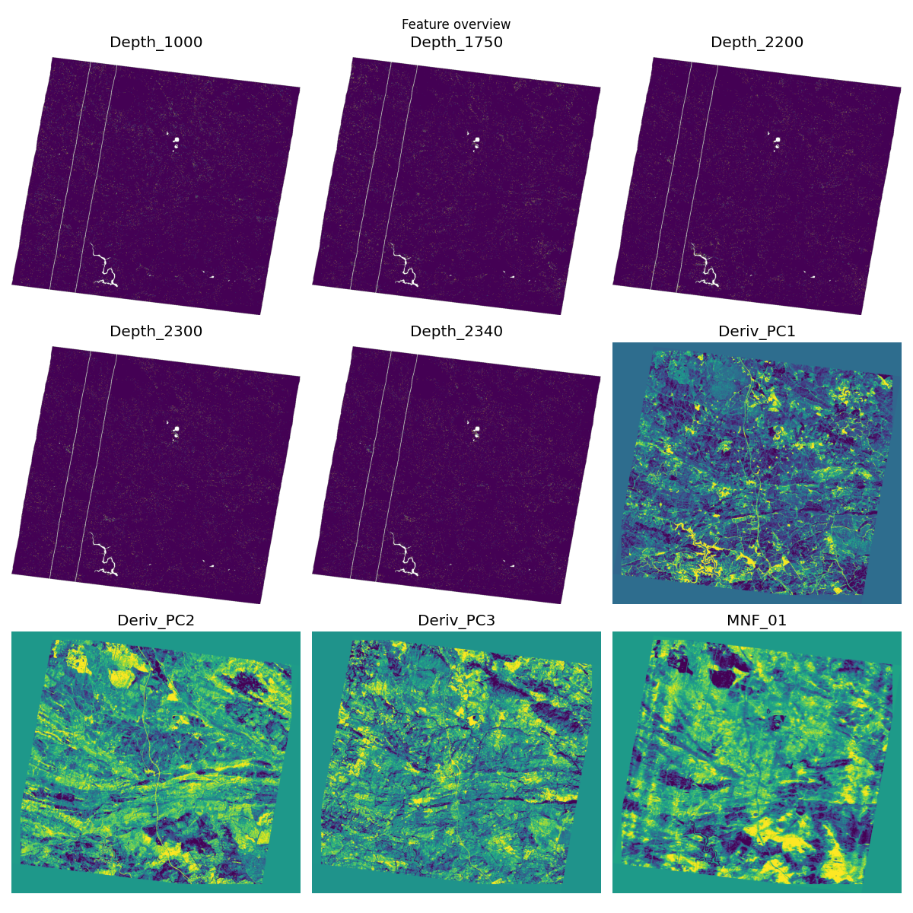
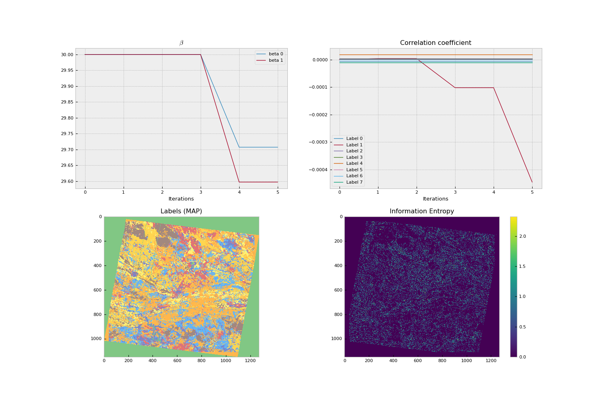
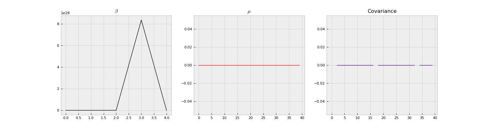

Note
Go to the end to download the full example code.
EnMap Lithological Segmentation¶
This example demonstrates the workflow for lithological segmentation using EnMap hyperspectral data. It covers feature extraction, data preparation, and the Bayesian segmentation process.
Overview
EnMap (Environmental Mapping and Analysis Program) is a German hyperspectral satellite mission. This example shows how to process EnMap L2A products to identify different lithological units.
Key Steps
Feature Extraction: Extracting meaningful features from the hyperspectral cube (MNF, absorption depths, derivative PCs).
Preprocessing: Detrending and background-field removal to account for sensor artifacts.
Bayesian Segmentation: Running the core segmentation engine to classify pixels and estimate uncertainty.
Export: Saving the results as georeferenced GeoTIFFs.
Note
This example requires an EnMap L2A product folder. Update the enmap_folder path to point to your local data.
Import Libraries¶
We import the necessary modules for EnMap feature extraction and the core segmentation workflow.
import os
from mineye.BayesianSegmentation.EnMap_feature_extraction import (
enmap_to_feature_stack,
plot_feature_quicklooks,
save_detrended_swir_column_median_plot,
features_to_memory_datasets,
write_features_to_files,
)
from mineye.BayesianSegmentation.full_workflow import run_workflow
Parameters¶
Define the input paths and hyperparameters for the segmentation. The enmap_folder should point to a valid EnMAP L2A directory containing SPECTRAL_IMAGE.TIF and metadata.
# Attempt to get paths from Sphinx config if running in gallery
import os
try:
from sphinx.util import logging
# This is a bit of a hack to check if we are in a sphinx build
# In a real gallery build, we might use environment variables
enmap_root = os.getenv('ENMAP_DATA_ROOT', 'examples/Data/Segmentation_Input_Data/Enmap')
output_root = os.getenv('SEGMENTATION_OUTPUT_ROOT', 'examples/Data/Segmentation_Output_Data')
except ImportError:
enmap_root = 'examples/Data/Segmentation_Input_Data/Enmap'
output_root = 'examples/Data/Segmentation_Output_Data'
# Paths
enmap_folder: str = os.path.join(enmap_root, "ENMAP01-____L2A-DT0000026661_20230712T114038Z_001_V010402_20240818T134118Z")
output_prefix: str = os.path.join(output_root, "EnMap")
# If the path is relative, make it relative to the project root
if not os.path.isabs(enmap_folder):
try:
script_dir = os.path.dirname(os.path.abspath(__file__))
except NameError:
# __file__ is not defined when running in some environments (like Sphinx Gallery exec)
# In Sphinx Gallery, the CWD is typically the directory where the script is located
script_dir = os.getcwd()
# Sphinx Gallery execution check: if we are in 'docs/source/examples_segmentation'
# or similar, the project root is 3 levels up. Otherwise, assume 2 levels up.
if 'docs/source' in script_dir:
project_root = os.path.abspath(os.path.join(script_dir, "../../../"))
else:
project_root = os.path.abspath(os.path.join(script_dir, "../../"))
enmap_folder = os.path.join(project_root, enmap_folder)
output_prefix = os.path.join(project_root, output_prefix)
# Segmentation hyperparameters
n_classes: int = 8
iterations: int = 5
beta_init: float = 30.0
beta_jump: float = 0.1
save_npy: bool = True
# Detrending / background-field removal settings
detrend: bool = True
detrend_sigma: float = 120.0
detrend_downsample: int | None = 4
detrend_buffer_px: int = 20
detrend_den_thresh: float = 0.2
# Additional exclusions and handling
edge_px: int = 40
mnf_buffer_px: int | None = None
destripe: bool = False
# Workflow options
use_soil_mask: bool = False
plot_tci: bool = False
Feature Extraction¶
We extract a stack of descriptive features from the EnMap cube. This includes Minimum Noise Fraction (MNF) transforms, specific absorption depth maps, and derivative-based Principal Components.
if not os.path.isdir(enmap_folder):
print(f"EnMAP folder not found at {enmap_folder}. Skipping extraction for demonstration.")
features, meta = None, None
else:
features, meta = enmap_to_feature_stack(
enmap_folder,
detrend=detrend,
detrend_sigma=detrend_sigma,
detrend_downsample=detrend_downsample,
detrend_buffer_px=detrend_buffer_px,
detrend_den_thresh=detrend_den_thresh,
mnf_buffer_px=mnf_buffer_px,
edge_px=edge_px,
destripe=destripe,
)
print(f"Extracted {len(features)} feature layers")
[EnMap] Using nested product directory: ENMAP01-____L2A-DT0000026661_20230712T114038Z_001_V010402_20240818T134118Z
[EnMap] Loaded spectral cube: path=ENMAP01-____L2A-DT0000026661_20230712T114038Z_001_V010402_20240818T134118Z-SPECTRAL_IMAGE.TIF, shape=(224, 1150, 1269), dtype=int16
[EnMap] Geo: crs=EPSG:32629, transform=| 30.00, 0.00, 725505.00|
| 0.00,-30.00, 4217625.00|
| 0.00, 0.00, 1.00|, res=(30.0, 30.0)
[EnMap] Metadata XML: ENMAP01-____L2A-DT0000026661_20230712T114038Z_001_V010402_20240818T134118Z-METADATA.XML
[EnMap] Loaded QA mask: ENMAP01-____L2A-DT0000026661_20230712T114038Z_001_V010402_20240818T134118Z-QL_QUALITY_TESTFLAGS.TIF shape=(1150, 1269) dtype=uint8
[EnMap] Loaded QA mask: ENMAP01-____L2A-DT0000026661_20230712T114038Z_001_V010402_20240818T134118Z-QL_QUALITY_CLASSES.TIF shape=(1150, 1269) dtype=uint8
[EnMap] Loaded QA mask: ENMAP01-____L2A-DT0000026661_20230712T114038Z_001_V010402_20240818T134118Z-QL_QUALITY_HAZE.TIF shape=(1150, 1269) dtype=uint8
[EnMap] Loaded QA mask: ENMAP01-____L2A-DT0000026661_20230712T114038Z_001_V010402_20240818T134118Z-QL_QUALITY_CIRRUS.TIF shape=(1150, 1269) dtype=uint8
[EnMap] Loaded QA mask: ENMAP01-____L2A-DT0000026661_20230712T114038Z_001_V010402_20240818T134118Z-QL_PIXELMASK.TIF shape=(1150, 1269) dtype=uint8
[EnMap] Loaded QA mask: ENMAP01-____L2A-DT0000026661_20230712T114038Z_001_V010402_20240818T134118Z-QL_QUALITY_CLOUD.TIF shape=(1150, 1269) dtype=uint8
[EnMap] Loaded QA mask: ENMAP01-____L2A-DT0000026661_20230712T114038Z_001_V010402_20240818T134118Z-QL_QUALITY_SNOW.TIF shape=(1150, 1269) dtype=uint8
[EnMap] Loaded QA mask: ENMAP01-____L2A-DT0000026661_20230712T114038Z_001_V010402_20240818T134118Z-QL_QUALITY_CLOUDSHADOW.TIF shape=(1150, 1269) dtype=uint8
[EnMap] Wavelengths: count=224, min=418.42 nm, max=2445.30 nm, converted_from_um=False
[EnMap] QA 'ENMAP01-____L2A-DT0000026661_20230712T114038Z_001_V010402_20240818T134118Z-QL_QUALITY_TESTFLAGS.TIF': bad_pixels=2242 (0.15%)
[EnMap] QA 'ENMAP01-____L2A-DT0000026661_20230712T114038Z_001_V010402_20240818T134118Z-QL_QUALITY_CLASSES.TIF' class histogram -> 0:318, 1:1107760, 2:2473, 3:348799
[EnMap] QA 'ENMAP01-____L2A-DT0000026661_20230712T114038Z_001_V010402_20240818T134118Z-QL_QUALITY_CLASSES.TIF': bad_pixels=351272 (24.07%)
[EnMap] QA 'ENMAP01-____L2A-DT0000026661_20230712T114038Z_001_V010402_20240818T134118Z-QL_QUALITY_HAZE.TIF': bad_pixels=162 (0.01%)
[EnMap] QA 'ENMAP01-____L2A-DT0000026661_20230712T114038Z_001_V010402_20240818T134118Z-QL_QUALITY_CIRRUS.TIF': bad_pixels=0 (0.00%)
[EnMap] QA 'ENMAP01-____L2A-DT0000026661_20230712T114038Z_001_V010402_20240818T134118Z-QL_PIXELMASK.TIF': bad_pixels=2282 (0.16%)
[EnMap] QA 'ENMAP01-____L2A-DT0000026661_20230712T114038Z_001_V010402_20240818T134118Z-QL_QUALITY_CLOUD.TIF': bad_pixels=320 (0.02%)
[EnMap] QA 'ENMAP01-____L2A-DT0000026661_20230712T114038Z_001_V010402_20240818T134118Z-QL_QUALITY_SNOW.TIF': bad_pixels=0 (0.00%)
[EnMap] QA 'ENMAP01-____L2A-DT0000026661_20230712T114038Z_001_V010402_20240818T134118Z-QL_QUALITY_CLOUDSHADOW.TIF': bad_pixels=0 (0.00%)
[EnMap] Combined QA bad mask: bad_pixels=356178 (24.41%), shape=(1150, 1269)
[EnMap] valid_for_stats: 74.42% of pixels (edge_px=40).
[EnMap] Detrending config: enabled=True, sigma=120.0, downsample=4, buffer_px=20, den_thresh=0.2, edge_px=40, mask_bad_for_stats=yes
[EnMap] Detrending/background removal: bands=212, rows=1150, cols=1269, sigma=120.0, downsample=4, buffer_px=20, den_thresh=0.2, mask_bad=yes
[EnMap] Detrending progress: band 1/212 (dt=1.19s, total=1.2s, valid=74.4%, background_std=36.68, corrected_std=190.5, den_max=0.975)
[EnMap] Detrending progress: band 2/212 (dt=1.18s, total=2.4s, valid=74.4%, background_std=37.02, corrected_std=198.3, den_max=0.975)
[EnMap] Detrending progress: band 3/212 (dt=1.19s, total=3.6s, valid=74.4%, background_std=39.82, corrected_std=205.5, den_max=0.975)
[EnMap] Detrending progress: band 4/212 (dt=1.18s, total=4.7s, valid=74.4%, background_std=39.71, corrected_std=212, den_max=0.975)
[EnMap] Detrending progress: band 5/212 (dt=1.19s, total=5.9s, valid=74.4%, background_std=39.93, corrected_std=214, den_max=0.975)
[EnMap] Detrending progress: band 6/212 (dt=1.19s, total=7.1s, valid=74.4%, background_std=41.33, corrected_std=216.7, den_max=0.975)
[EnMap] Detrending progress: band 7/212 (dt=1.19s, total=8.3s, valid=74.4%, background_std=41.43, corrected_std=219.9, den_max=0.975)
[EnMap] Detrending progress: band 8/212 (dt=1.19s, total=9.5s, valid=74.4%, background_std=42.1, corrected_std=221.7, den_max=0.975)
[EnMap] Detrending progress: band 9/212 (dt=1.19s, total=10.7s, valid=74.4%, background_std=42.91, corrected_std=225.3, den_max=0.975)
[EnMap] Detrending progress: band 10/212 (dt=1.19s, total=11.9s, valid=74.4%, background_std=44.24, corrected_std=229, den_max=0.975)
[EnMap] Detrending progress: band 11/212 (dt=1.19s, total=13.1s, valid=74.4%, background_std=44.41, corrected_std=232.1, den_max=0.975)
[EnMap] Detrending progress: band 12/212 (dt=1.19s, total=14.3s, valid=74.4%, background_std=47.49, corrected_std=234.9, den_max=0.975)
[EnMap] Detrending progress: band 13/212 (dt=1.19s, total=15.4s, valid=74.4%, background_std=48.67, corrected_std=242.4, den_max=0.975)
[EnMap] Detrending progress: band 14/212 (dt=1.19s, total=16.6s, valid=74.4%, background_std=48.69, corrected_std=246.2, den_max=0.975)
[EnMap] Detrending progress: band 15/212 (dt=1.19s, total=17.8s, valid=74.4%, background_std=51.56, corrected_std=249.7, den_max=0.975)
[EnMap] Detrending progress: band 16/212 (dt=1.19s, total=19.0s, valid=74.4%, background_std=52.35, corrected_std=254.5, den_max=0.975)
[EnMap] Detrending progress: band 17/212 (dt=1.19s, total=20.2s, valid=74.4%, background_std=52.91, corrected_std=258.6, den_max=0.975)
[EnMap] Detrending progress: band 18/212 (dt=1.19s, total=21.4s, valid=74.4%, background_std=54.01, corrected_std=261.1, den_max=0.975)
[EnMap] Detrending progress: band 19/212 (dt=1.19s, total=22.6s, valid=74.4%, background_std=55.68, corrected_std=264.3, den_max=0.975)
[EnMap] Detrending progress: band 20/212 (dt=1.18s, total=23.7s, valid=74.4%, background_std=54.58, corrected_std=264.8, den_max=0.975)
[EnMap] Detrending progress: band 21/212 (dt=1.19s, total=24.9s, valid=74.4%, background_std=54.08, corrected_std=266.5, den_max=0.975)
[EnMap] Detrending progress: band 22/212 (dt=1.18s, total=26.1s, valid=74.4%, background_std=54.8, corrected_std=269.2, den_max=0.975)
[EnMap] Detrending progress: band 23/212 (dt=1.18s, total=27.3s, valid=74.4%, background_std=56.24, corrected_std=273.5, den_max=0.975)
[EnMap] Detrending progress: band 24/212 (dt=1.19s, total=28.5s, valid=74.4%, background_std=57.49, corrected_std=279.2, den_max=0.975)
[EnMap] Detrending progress: band 25/212 (dt=1.18s, total=29.7s, valid=74.4%, background_std=58.34, corrected_std=284.7, den_max=0.975)
[EnMap] Detrending progress: band 26/212 (dt=1.19s, total=30.9s, valid=74.4%, background_std=59.45, corrected_std=292, den_max=0.975)
[EnMap] Detrending progress: band 27/212 (dt=1.19s, total=32.0s, valid=74.4%, background_std=62.76, corrected_std=300.8, den_max=0.975)
[EnMap] Detrending progress: band 28/212 (dt=1.19s, total=33.2s, valid=74.4%, background_std=64.57, corrected_std=312.2, den_max=0.975)
[EnMap] Detrending progress: band 29/212 (dt=1.18s, total=34.4s, valid=74.4%, background_std=67.66, corrected_std=323.5, den_max=0.975)
[EnMap] Detrending progress: band 30/212 (dt=1.19s, total=35.6s, valid=74.4%, background_std=70.14, corrected_std=334.3, den_max=0.975)
[EnMap] Detrending progress: band 31/212 (dt=1.18s, total=36.8s, valid=74.4%, background_std=72.74, corrected_std=347.6, den_max=0.975)
[EnMap] Detrending progress: band 32/212 (dt=1.18s, total=38.0s, valid=74.4%, background_std=74.71, corrected_std=354.6, den_max=0.975)
[EnMap] Detrending progress: band 33/212 (dt=1.18s, total=39.2s, valid=74.4%, background_std=77.52, corrected_std=364.8, den_max=0.975)
[EnMap] Detrending progress: band 34/212 (dt=1.19s, total=40.3s, valid=74.4%, background_std=79.06, corrected_std=372.3, den_max=0.975)
[EnMap] Detrending progress: band 35/212 (dt=1.18s, total=41.5s, valid=74.4%, background_std=80.86, corrected_std=379.5, den_max=0.975)
[EnMap] Detrending progress: band 36/212 (dt=1.18s, total=42.7s, valid=74.4%, background_std=82.29, corrected_std=385.7, den_max=0.975)
[EnMap] Detrending progress: band 37/212 (dt=1.18s, total=43.9s, valid=74.4%, background_std=84.78, corrected_std=392.4, den_max=0.975)
[EnMap] Detrending progress: band 38/212 (dt=1.18s, total=45.1s, valid=74.4%, background_std=86.37, corrected_std=401.3, den_max=0.975)
[EnMap] Detrending progress: band 39/212 (dt=1.18s, total=46.3s, valid=74.4%, background_std=87.29, corrected_std=403.9, den_max=0.975)
[EnMap] Detrending progress: band 40/212 (dt=1.18s, total=47.4s, valid=74.4%, background_std=89.12, corrected_std=409.2, den_max=0.975)
[EnMap] Detrending progress: band 41/212 (dt=1.18s, total=48.6s, valid=74.4%, background_std=90.77, corrected_std=417.5, den_max=0.975)
[EnMap] Detrending progress: band 42/212 (dt=1.18s, total=49.8s, valid=74.4%, background_std=92.67, corrected_std=425.8, den_max=0.975)
[EnMap] Detrending progress: band 43/212 (dt=1.20s, total=51.0s, valid=74.4%, background_std=93.86, corrected_std=430.8, den_max=0.975)
[EnMap] Detrending progress: band 44/212 (dt=1.18s, total=52.2s, valid=74.4%, background_std=95.99, corrected_std=436.3, den_max=0.975)
[EnMap] Detrending progress: band 45/212 (dt=1.18s, total=53.4s, valid=74.4%, background_std=97.65, corrected_std=445, den_max=0.975)
[EnMap] Detrending progress: band 46/212 (dt=1.18s, total=54.5s, valid=74.4%, background_std=99.04, corrected_std=450.4, den_max=0.975)
[EnMap] Detrending progress: band 47/212 (dt=1.18s, total=55.7s, valid=74.4%, background_std=99.96, corrected_std=455.3, den_max=0.975)
[EnMap] Detrending progress: band 48/212 (dt=1.18s, total=56.9s, valid=74.4%, background_std=99.01, corrected_std=456.7, den_max=0.975)
[EnMap] Detrending progress: band 49/212 (dt=1.19s, total=58.1s, valid=74.4%, background_std=97.98, corrected_std=442, den_max=0.975)
[EnMap] Detrending progress: band 50/212 (dt=1.18s, total=59.3s, valid=74.4%, background_std=93, corrected_std=423.6, den_max=0.975)
[EnMap] Detrending progress: band 51/212 (dt=1.19s, total=60.5s, valid=74.4%, background_std=83.8, corrected_std=391.1, den_max=0.975)
[EnMap] Detrending progress: band 52/212 (dt=1.19s, total=61.7s, valid=74.4%, background_std=73.27, corrected_std=365.7, den_max=0.975)
[EnMap] Detrending progress: band 53/212 (dt=1.18s, total=62.8s, valid=74.4%, background_std=64.8, corrected_std=352, den_max=0.975)
[EnMap] Detrending progress: band 54/212 (dt=1.18s, total=64.0s, valid=74.4%, background_std=62.41, corrected_std=346.2, den_max=0.975)
[EnMap] Detrending progress: band 55/212 (dt=1.18s, total=65.2s, valid=74.4%, background_std=64.75, corrected_std=339.4, den_max=0.975)
[EnMap] Detrending progress: band 56/212 (dt=1.18s, total=66.4s, valid=74.4%, background_std=69.17, corrected_std=342.6, den_max=0.975)
[EnMap] Detrending progress: band 57/212 (dt=1.18s, total=67.6s, valid=74.4%, background_std=72.89, corrected_std=343.9, den_max=0.975)
[EnMap] Detrending progress: band 58/212 (dt=1.18s, total=68.8s, valid=74.4%, background_std=79.45, corrected_std=364, den_max=0.975)
[EnMap] Detrending progress: band 59/212 (dt=1.18s, total=69.9s, valid=74.4%, background_std=72.93, corrected_std=323.6, den_max=0.975)
[EnMap] Detrending progress: band 60/212 (dt=1.18s, total=71.1s, valid=74.4%, background_std=85.68, corrected_std=373.5, den_max=0.975)
[EnMap] Detrending progress: band 61/212 (dt=1.18s, total=72.3s, valid=74.4%, background_std=85.45, corrected_std=373.3, den_max=0.975)
[EnMap] Detrending progress: band 62/212 (dt=1.18s, total=73.5s, valid=74.4%, background_std=87.31, corrected_std=376.7, den_max=0.975)
[EnMap] Detrending progress: band 63/212 (dt=1.18s, total=74.6s, valid=74.4%, background_std=90.24, corrected_std=385.4, den_max=0.975)
[EnMap] Detrending progress: band 64/212 (dt=1.18s, total=75.8s, valid=74.4%, background_std=92.26, corrected_std=390.5, den_max=0.975)
[EnMap] Detrending progress: band 65/212 (dt=1.18s, total=77.0s, valid=74.4%, background_std=95.94, corrected_std=401.3, den_max=0.975)
[EnMap] Detrending progress: band 66/212 (dt=1.18s, total=78.2s, valid=74.4%, background_std=97.41, corrected_std=395.5, den_max=0.975)
[EnMap] Detrending progress: band 67/212 (dt=1.18s, total=79.4s, valid=74.4%, background_std=97.86, corrected_std=399.8, den_max=0.975)
[EnMap] Detrending progress: band 68/212 (dt=1.18s, total=80.5s, valid=74.4%, background_std=98.64, corrected_std=392.6, den_max=0.975)
[EnMap] Detrending progress: band 69/212 (dt=1.18s, total=81.7s, valid=74.4%, background_std=102.2, corrected_std=405.9, den_max=0.975)
[EnMap] Detrending progress: band 70/212 (dt=1.18s, total=82.9s, valid=74.4%, background_std=103, corrected_std=401.6, den_max=0.975)
[EnMap] Detrending progress: band 71/212 (dt=1.18s, total=84.1s, valid=74.4%, background_std=102.7, corrected_std=399.5, den_max=0.975)
[EnMap] Detrending progress: band 72/212 (dt=1.18s, total=85.3s, valid=74.4%, background_std=105, corrected_std=404.1, den_max=0.975)
[EnMap] Detrending progress: band 73/212 (dt=1.18s, total=86.5s, valid=74.4%, background_std=104.9, corrected_std=402.6, den_max=0.975)
[EnMap] Detrending progress: band 74/212 (dt=1.18s, total=87.6s, valid=74.4%, background_std=108.6, corrected_std=411.4, den_max=0.975)
[EnMap] Detrending progress: band 75/212 (dt=1.18s, total=88.8s, valid=74.4%, background_std=110.8, corrected_std=415.4, den_max=0.975)
[EnMap] Detrending progress: band 76/212 (dt=1.18s, total=90.0s, valid=74.4%, background_std=110.6, corrected_std=414.6, den_max=0.975)
[EnMap] Detrending progress: band 77/212 (dt=1.18s, total=91.2s, valid=74.4%, background_std=105.2, corrected_std=408, den_max=0.975)
[EnMap] Detrending progress: band 78/212 (dt=1.18s, total=92.4s, valid=74.4%, background_std=105.8, corrected_std=400.4, den_max=0.975)
[EnMap] Detrending progress: band 79/212 (dt=1.18s, total=93.5s, valid=74.4%, background_std=105.4, corrected_std=405.3, den_max=0.975)
[EnMap] Detrending progress: band 80/212 (dt=1.18s, total=94.7s, valid=74.4%, background_std=104.1, corrected_std=397, den_max=0.975)
[EnMap] Detrending progress: band 81/212 (dt=1.18s, total=95.9s, valid=74.4%, background_std=97.83, corrected_std=370.9, den_max=0.975)
[EnMap] Detrending progress: band 82/212 (dt=1.18s, total=97.1s, valid=74.4%, background_std=107.5, corrected_std=415, den_max=0.975)
[EnMap] Detrending progress: band 83/212 (dt=1.18s, total=98.3s, valid=74.4%, background_std=117.5, corrected_std=416.3, den_max=0.975)
[EnMap] Detrending progress: band 84/212 (dt=1.18s, total=99.4s, valid=74.4%, background_std=108.9, corrected_std=387.2, den_max=0.975)
[EnMap] Detrending progress: band 85/212 (dt=1.18s, total=100.6s, valid=74.4%, background_std=108.2, corrected_std=433.5, den_max=0.975)
[EnMap] Detrending progress: band 86/212 (dt=1.18s, total=101.8s, valid=74.4%, background_std=103.4, corrected_std=429.1, den_max=0.975)
[EnMap] Detrending progress: band 87/212 (dt=1.18s, total=103.0s, valid=74.4%, background_std=103.3, corrected_std=433.8, den_max=0.975)
[EnMap] Detrending progress: band 88/212 (dt=1.18s, total=104.2s, valid=74.4%, background_std=103, corrected_std=421, den_max=0.975)
[EnMap] Detrending progress: band 89/212 (dt=1.18s, total=105.3s, valid=74.4%, background_std=105.1, corrected_std=423.4, den_max=0.975)
[EnMap] Detrending progress: band 90/212 (dt=1.17s, total=106.5s, valid=74.4%, background_std=105.3, corrected_std=406.9, den_max=0.975)
[EnMap] Detrending progress: band 91/212 (dt=1.18s, total=107.7s, valid=74.4%, background_std=105.1, corrected_std=422.1, den_max=0.975)
[EnMap] Detrending progress: band 92/212 (dt=1.18s, total=108.9s, valid=74.4%, background_std=112, corrected_std=423.9, den_max=0.975)
[EnMap] Detrending progress: band 93/212 (dt=1.18s, total=110.1s, valid=74.4%, background_std=105.3, corrected_std=429.4, den_max=0.975)
[EnMap] Detrending progress: band 94/212 (dt=1.17s, total=111.2s, valid=74.4%, background_std=111.9, corrected_std=424.1, den_max=0.975)
[EnMap] Detrending progress: band 95/212 (dt=1.18s, total=112.4s, valid=74.4%, background_std=106.7, corrected_std=433.5, den_max=0.975)
[EnMap] Detrending progress: band 96/212 (dt=1.18s, total=113.6s, valid=74.4%, background_std=112.1, corrected_std=423.5, den_max=0.975)
[EnMap] Detrending progress: band 97/212 (dt=1.18s, total=114.8s, valid=74.4%, background_std=108, corrected_std=435.9, den_max=0.975)
[EnMap] Detrending progress: band 98/212 (dt=1.18s, total=116.0s, valid=74.4%, background_std=111.7, corrected_std=420.3, den_max=0.975)
[EnMap] Detrending progress: band 99/212 (dt=1.19s, total=117.1s, valid=74.4%, background_std=109.2, corrected_std=438.1, den_max=0.975)
[EnMap] Detrending progress: band 100/212 (dt=1.18s, total=118.3s, valid=74.4%, background_std=110.6, corrected_std=441.2, den_max=0.975)
[EnMap] Detrending progress: band 101/212 (dt=1.19s, total=119.5s, valid=74.4%, background_std=112.1, corrected_std=444.4, den_max=0.975)
[EnMap] Detrending progress: band 102/212 (dt=1.18s, total=120.7s, valid=74.4%, background_std=113.5, corrected_std=447.7, den_max=0.975)
[EnMap] Detrending progress: band 103/212 (dt=1.18s, total=121.9s, valid=74.4%, background_std=114.5, corrected_std=449.5, den_max=0.975)
[EnMap] Detrending progress: band 104/212 (dt=1.18s, total=123.1s, valid=74.4%, background_std=115.5, corrected_std=452.7, den_max=0.975)
[EnMap] Detrending progress: band 105/212 (dt=1.18s, total=124.2s, valid=74.4%, background_std=116.4, corrected_std=455.9, den_max=0.975)
[EnMap] Detrending progress: band 106/212 (dt=1.18s, total=125.4s, valid=74.4%, background_std=116.5, corrected_std=457, den_max=0.975)
[EnMap] Detrending progress: band 107/212 (dt=1.18s, total=126.6s, valid=74.4%, background_std=116.8, corrected_std=459.1, den_max=0.975)
[EnMap] Detrending progress: band 108/212 (dt=1.18s, total=127.8s, valid=74.4%, background_std=117.2, corrected_std=458.9, den_max=0.975)
[EnMap] Detrending progress: band 109/212 (dt=1.18s, total=129.0s, valid=74.4%, background_std=125.3, corrected_std=440.4, den_max=0.975)
[EnMap] Detrending progress: band 110/212 (dt=1.18s, total=130.1s, valid=74.4%, background_std=108.4, corrected_std=479.8, den_max=0.975)
[EnMap] Detrending progress: band 111/212 (dt=1.18s, total=131.3s, valid=74.4%, background_std=108.3, corrected_std=479.7, den_max=0.975)
[EnMap] Detrending progress: band 112/212 (dt=1.19s, total=132.5s, valid=74.4%, background_std=106.1, corrected_std=470.4, den_max=0.975)
[EnMap] Detrending progress: band 113/212 (dt=1.18s, total=133.7s, valid=74.4%, background_std=107.9, corrected_std=477, den_max=0.975)
[EnMap] Detrending progress: band 114/212 (dt=1.18s, total=134.9s, valid=74.4%, background_std=111.9, corrected_std=480.8, den_max=0.975)
[EnMap] Detrending progress: band 115/212 (dt=1.18s, total=136.1s, valid=74.4%, background_std=113.2, corrected_std=489.8, den_max=0.975)
[EnMap] Detrending progress: band 116/212 (dt=1.18s, total=137.2s, valid=74.4%, background_std=115.6, corrected_std=491.4, den_max=0.975)
[EnMap] Detrending progress: band 117/212 (dt=1.18s, total=138.4s, valid=74.4%, background_std=114.5, corrected_std=492.2, den_max=0.975)
[EnMap] Detrending progress: band 118/212 (dt=1.19s, total=139.6s, valid=74.4%, background_std=115.8, corrected_std=494.5, den_max=0.975)
[EnMap] Detrending progress: band 119/212 (dt=1.17s, total=140.8s, valid=74.4%, background_std=117.5, corrected_std=496.6, den_max=0.975)
[EnMap] Detrending progress: band 120/212 (dt=1.18s, total=142.0s, valid=74.4%, background_std=119.4, corrected_std=498, den_max=0.975)
[EnMap] Detrending progress: band 121/212 (dt=1.18s, total=143.1s, valid=74.4%, background_std=123.4, corrected_std=498, den_max=0.975)
[EnMap] Detrending progress: band 122/212 (dt=1.18s, total=144.3s, valid=74.4%, background_std=118.6, corrected_std=504.1, den_max=0.975)
[EnMap] Detrending progress: band 123/212 (dt=1.18s, total=145.5s, valid=74.4%, background_std=121.2, corrected_std=506.5, den_max=0.975)
[EnMap] Detrending progress: band 124/212 (dt=1.18s, total=146.7s, valid=74.4%, background_std=124.9, corrected_std=507.4, den_max=0.975)
[EnMap] Detrending progress: band 125/212 (dt=1.18s, total=147.9s, valid=74.4%, background_std=129.3, corrected_std=512.4, den_max=0.975)
[EnMap] Detrending progress: band 126/212 (dt=1.18s, total=149.0s, valid=74.4%, background_std=132.9, corrected_std=522.9, den_max=0.975)
[EnMap] Detrending progress: band 127/212 (dt=1.18s, total=150.2s, valid=74.4%, background_std=141.6, corrected_std=531.7, den_max=0.975)
[EnMap] Detrending progress: band 128/212 (dt=1.19s, total=151.4s, valid=74.4%, background_std=184.2, corrected_std=661.3, den_max=0.975)
[EnMap] Detrending progress: band 129/212 (dt=1.18s, total=152.6s, valid=74.4%, background_std=216.9, corrected_std=705.4, den_max=0.975)
[EnMap] Detrending progress: band 130/212 (dt=1.18s, total=153.8s, valid=74.4%, background_std=197.1, corrected_std=691.5, den_max=0.975)
[EnMap] Detrending progress: band 131/212 (dt=1.18s, total=155.0s, valid=74.4%, background_std=181.6, corrected_std=674.9, den_max=0.975)
[EnMap] Detrending progress: band 132/212 (dt=1.18s, total=156.1s, valid=74.4%, background_std=185.2, corrected_std=665.5, den_max=0.975)
[EnMap] Detrending progress: band 133/212 (dt=1.18s, total=157.3s, valid=74.4%, background_std=188.9, corrected_std=657.6, den_max=0.975)
[EnMap] Detrending progress: band 134/212 (dt=1.18s, total=158.5s, valid=74.4%, background_std=191.7, corrected_std=657.3, den_max=0.975)
[EnMap] Detrending progress: band 135/212 (dt=1.18s, total=159.7s, valid=74.4%, background_std=192.8, corrected_std=652.7, den_max=0.975)
[EnMap] Detrending progress: band 136/212 (dt=1.18s, total=160.9s, valid=74.4%, background_std=192.6, corrected_std=649, den_max=0.975)
[EnMap] Detrending progress: band 137/212 (dt=1.17s, total=162.0s, valid=74.4%, background_std=193.1, corrected_std=647, den_max=0.975)
[EnMap] Detrending progress: band 138/212 (dt=1.19s, total=163.2s, valid=74.4%, background_std=195.1, corrected_std=642.1, den_max=0.975)
[EnMap] Detrending progress: band 139/212 (dt=1.19s, total=164.4s, valid=74.4%, background_std=190.5, corrected_std=641.4, den_max=0.975)
[EnMap] Detrending progress: band 140/212 (dt=1.18s, total=165.6s, valid=74.4%, background_std=190.8, corrected_std=640.2, den_max=0.975)
[EnMap] Detrending progress: band 141/212 (dt=1.18s, total=166.8s, valid=74.4%, background_std=194.2, corrected_std=636.8, den_max=0.975)
[EnMap] Detrending progress: band 142/212 (dt=1.18s, total=167.9s, valid=74.4%, background_std=190.9, corrected_std=639.3, den_max=0.975)
[EnMap] Detrending progress: band 143/212 (dt=1.18s, total=169.1s, valid=74.4%, background_std=190.3, corrected_std=637.9, den_max=0.975)
[EnMap] Detrending progress: band 144/212 (dt=1.18s, total=170.3s, valid=74.4%, background_std=192.7, corrected_std=635.8, den_max=0.975)
[EnMap] Detrending progress: band 145/212 (dt=1.18s, total=171.5s, valid=74.4%, background_std=192.4, corrected_std=634.9, den_max=0.975)
[EnMap] Detrending progress: band 146/212 (dt=1.18s, total=172.7s, valid=74.4%, background_std=192.8, corrected_std=639.4, den_max=0.975)
[EnMap] Detrending progress: band 147/212 (dt=1.18s, total=173.8s, valid=74.4%, background_std=194, corrected_std=638.3, den_max=0.975)
[EnMap] Detrending progress: band 148/212 (dt=1.18s, total=175.0s, valid=74.4%, background_std=195.3, corrected_std=638.7, den_max=0.975)
[EnMap] Detrending progress: band 149/212 (dt=1.18s, total=176.2s, valid=74.4%, background_std=194.1, corrected_std=637.6, den_max=0.975)
[EnMap] Detrending progress: band 150/212 (dt=1.18s, total=177.4s, valid=74.4%, background_std=196.3, corrected_std=639.7, den_max=0.975)
[EnMap] Detrending progress: band 151/212 (dt=1.18s, total=178.6s, valid=74.4%, background_std=199.6, corrected_std=644.6, den_max=0.975)
[EnMap] Detrending progress: band 152/212 (dt=1.18s, total=179.7s, valid=74.4%, background_std=202.5, corrected_std=647.8, den_max=0.975)
[EnMap] Detrending progress: band 153/212 (dt=1.18s, total=180.9s, valid=74.4%, background_std=201.9, corrected_std=647.7, den_max=0.975)
[EnMap] Detrending progress: band 154/212 (dt=1.17s, total=182.1s, valid=74.4%, background_std=202.1, corrected_std=650.5, den_max=0.975)
[EnMap] Detrending progress: band 155/212 (dt=1.17s, total=183.3s, valid=74.4%, background_std=205.5, corrected_std=659.7, den_max=0.975)
[EnMap] Detrending progress: band 156/212 (dt=1.18s, total=184.4s, valid=74.4%, background_std=210.1, corrected_std=658.8, den_max=0.975)
[EnMap] Detrending progress: band 157/212 (dt=1.17s, total=185.6s, valid=74.4%, background_std=213.4, corrected_std=660.2, den_max=0.975)
[EnMap] Detrending progress: band 158/212 (dt=1.17s, total=186.8s, valid=74.4%, background_std=213.5, corrected_std=652.2, den_max=0.975)
[EnMap] Detrending progress: band 159/212 (dt=1.18s, total=188.0s, valid=74.4%, background_std=183.1, corrected_std=579.4, den_max=0.975)
[EnMap] Detrending progress: band 160/212 (dt=1.17s, total=189.1s, valid=74.4%, background_std=181.3, corrected_std=606.6, den_max=0.975)
[EnMap] Detrending progress: band 161/212 (dt=1.17s, total=190.3s, valid=74.4%, background_std=186.9, corrected_std=667.6, den_max=0.975)
[EnMap] Detrending progress: band 162/212 (dt=1.18s, total=191.5s, valid=74.4%, background_std=212, corrected_std=678.1, den_max=0.975)
[EnMap] Detrending progress: band 163/212 (dt=1.17s, total=192.7s, valid=74.4%, background_std=221.5, corrected_std=673.2, den_max=0.975)
[EnMap] Detrending progress: band 164/212 (dt=1.18s, total=193.8s, valid=74.4%, background_std=220.3, corrected_std=634.7, den_max=0.975)
[EnMap] Detrending progress: band 165/212 (dt=1.18s, total=195.0s, valid=74.4%, background_std=204.7, corrected_std=643.6, den_max=0.975)
[EnMap] Detrending progress: band 166/212 (dt=1.18s, total=196.2s, valid=74.4%, background_std=199.1, corrected_std=642.6, den_max=0.975)
[EnMap] Detrending progress: band 167/212 (dt=1.18s, total=197.4s, valid=74.4%, background_std=203.5, corrected_std=657.1, den_max=0.975)
[EnMap] Detrending progress: band 168/212 (dt=1.18s, total=198.6s, valid=74.4%, background_std=204.5, corrected_std=646.9, den_max=0.975)
[EnMap] Detrending progress: band 169/212 (dt=1.18s, total=199.7s, valid=74.4%, background_std=203.1, corrected_std=643.3, den_max=0.975)
[EnMap] Detrending progress: band 170/212 (dt=1.18s, total=200.9s, valid=74.4%, background_std=203.9, corrected_std=646.3, den_max=0.975)
[EnMap] Detrending progress: band 171/212 (dt=1.18s, total=202.1s, valid=74.4%, background_std=204.5, corrected_std=644.2, den_max=0.975)
[EnMap] Detrending progress: band 172/212 (dt=1.18s, total=203.3s, valid=74.4%, background_std=199.6, corrected_std=632.1, den_max=0.975)
[EnMap] Detrending progress: band 173/212 (dt=1.18s, total=204.4s, valid=74.4%, background_std=199.8, corrected_std=636.1, den_max=0.975)
[EnMap] Detrending progress: band 174/212 (dt=1.18s, total=205.6s, valid=74.4%, background_std=199.2, corrected_std=632.7, den_max=0.975)
[EnMap] Detrending progress: band 175/212 (dt=1.18s, total=206.8s, valid=74.4%, background_std=196.6, corrected_std=617.4, den_max=0.975)
[EnMap] Detrending progress: band 176/212 (dt=1.18s, total=208.0s, valid=74.4%, background_std=190.8, corrected_std=605.7, den_max=0.975)
[EnMap] Detrending progress: band 177/212 (dt=1.17s, total=209.1s, valid=74.4%, background_std=184, corrected_std=595.7, den_max=0.975)
[EnMap] Detrending progress: band 178/212 (dt=1.18s, total=210.3s, valid=74.4%, background_std=182.2, corrected_std=590.3, den_max=0.975)
[EnMap] Detrending progress: band 179/212 (dt=1.17s, total=211.5s, valid=74.4%, background_std=178.1, corrected_std=577.3, den_max=0.975)
[EnMap] Detrending progress: band 180/212 (dt=1.17s, total=212.7s, valid=74.4%, background_std=175.6, corrected_std=573.7, den_max=0.975)
[EnMap] Detrending progress: band 181/212 (dt=1.18s, total=213.8s, valid=74.4%, background_std=169.3, corrected_std=556.2, den_max=0.975)
[EnMap] Detrending progress: band 182/212 (dt=1.18s, total=215.0s, valid=74.4%, background_std=167.9, corrected_std=561.4, den_max=0.975)
[EnMap] Detrending progress: band 183/212 (dt=1.17s, total=216.2s, valid=74.4%, background_std=178.4, corrected_std=575, den_max=0.975)
[EnMap] Detrending progress: band 184/212 (dt=1.17s, total=217.4s, valid=74.4%, background_std=185.5, corrected_std=587.9, den_max=0.975)
[EnMap] Detrending progress: band 185/212 (dt=1.18s, total=218.5s, valid=74.4%, background_std=187.1, corrected_std=589, den_max=0.975)
[EnMap] Detrending progress: band 186/212 (dt=1.18s, total=219.7s, valid=74.4%, background_std=185.6, corrected_std=579.8, den_max=0.975)
[EnMap] Detrending progress: band 187/212 (dt=1.18s, total=220.9s, valid=74.4%, background_std=182.7, corrected_std=571.6, den_max=0.975)
[EnMap] Detrending progress: band 188/212 (dt=1.17s, total=222.1s, valid=74.4%, background_std=181.1, corrected_std=566.8, den_max=0.975)
[EnMap] Detrending progress: band 189/212 (dt=1.18s, total=223.3s, valid=74.4%, background_std=177.3, corrected_std=559.9, den_max=0.975)
[EnMap] Detrending progress: band 190/212 (dt=1.18s, total=224.4s, valid=74.4%, background_std=175.7, corrected_std=557.1, den_max=0.975)
[EnMap] Detrending progress: band 191/212 (dt=1.17s, total=225.6s, valid=74.4%, background_std=175.1, corrected_std=553.5, den_max=0.975)
[EnMap] Detrending progress: band 192/212 (dt=1.18s, total=226.8s, valid=74.4%, background_std=174.8, corrected_std=543.6, den_max=0.975)
[EnMap] Detrending progress: band 193/212 (dt=1.18s, total=228.0s, valid=74.4%, background_std=169.2, corrected_std=538.2, den_max=0.975)
[EnMap] Detrending progress: band 194/212 (dt=1.18s, total=229.1s, valid=74.4%, background_std=165.4, corrected_std=540.8, den_max=0.975)
[EnMap] Detrending progress: band 195/212 (dt=1.18s, total=230.3s, valid=74.4%, background_std=173.7, corrected_std=526.8, den_max=0.975)
[EnMap] Detrending progress: band 196/212 (dt=1.18s, total=231.5s, valid=74.4%, background_std=159.2, corrected_std=529.8, den_max=0.975)
[EnMap] Detrending progress: band 197/212 (dt=1.18s, total=232.7s, valid=74.4%, background_std=165.3, corrected_std=526.9, den_max=0.975)
[EnMap] Detrending progress: band 198/212 (dt=1.18s, total=233.9s, valid=74.4%, background_std=165.8, corrected_std=516, den_max=0.975)
[EnMap] Detrending progress: band 199/212 (dt=1.18s, total=235.0s, valid=74.4%, background_std=165.1, corrected_std=512.2, den_max=0.975)
[EnMap] Detrending progress: band 200/212 (dt=1.18s, total=236.2s, valid=74.4%, background_std=155.4, corrected_std=523.2, den_max=0.975)
[EnMap] Detrending progress: band 201/212 (dt=1.18s, total=237.4s, valid=74.4%, background_std=167.4, corrected_std=533.4, den_max=0.975)
[EnMap] Detrending progress: band 202/212 (dt=1.18s, total=238.6s, valid=74.4%, background_std=170.6, corrected_std=525.7, den_max=0.975)
[EnMap] Detrending progress: band 203/212 (dt=1.18s, total=239.7s, valid=74.4%, background_std=168.1, corrected_std=532.4, den_max=0.975)
[EnMap] Detrending progress: band 204/212 (dt=1.18s, total=240.9s, valid=74.4%, background_std=164.3, corrected_std=530.8, den_max=0.975)
[EnMap] Detrending progress: band 205/212 (dt=1.18s, total=242.1s, valid=74.4%, background_std=164.5, corrected_std=536.7, den_max=0.975)
[EnMap] Detrending progress: band 206/212 (dt=1.18s, total=243.3s, valid=74.4%, background_std=170.3, corrected_std=537.1, den_max=0.975)
[EnMap] Detrending progress: band 207/212 (dt=1.17s, total=244.4s, valid=74.4%, background_std=167, corrected_std=529.7, den_max=0.975)
[EnMap] Detrending progress: band 208/212 (dt=1.18s, total=245.6s, valid=74.4%, background_std=168, corrected_std=515.7, den_max=0.975)
[EnMap] Detrending progress: band 209/212 (dt=1.18s, total=246.8s, valid=74.4%, background_std=153.6, corrected_std=534.2, den_max=0.975)
[EnMap] Detrending progress: band 210/212 (dt=1.18s, total=248.0s, valid=74.4%, background_std=181.4, corrected_std=524.6, den_max=0.975)
[EnMap] Detrending progress: band 211/212 (dt=1.17s, total=249.2s, valid=74.4%, background_std=148.9, corrected_std=536.4, den_max=0.975)
[EnMap] Detrending progress: band 212/212 (dt=1.18s, total=250.3s, valid=74.4%, background_std=185, corrected_std=495.5, den_max=0.975)
/home/leguark/Projects/gempy_project/Mineye-Terranigma/mineye/BayesianSegmentation/EnMap_feature_extraction.py:1143: RuntimeWarning: All-NaN slice encountered
left = np.nanmedian(sub[:k], axis=0)
/home/leguark/Projects/gempy_project/Mineye-Terranigma/mineye/BayesianSegmentation/EnMap_feature_extraction.py:1144: RuntimeWarning: All-NaN slice encountered
right = np.nanmedian(sub[-k:], axis=0)
[EnMap] derivative_pca(auto): using SWIR window (2000.0, 2400.0) with 48 bands.
[EnMap] Feature 'MNF_01' percentiles [1,5,50,95,99] -> [-9.88513206 -7.10658212 0.18550856 5.71464434 8.58126196]
[EnMap] Feature 'MNF_02' percentiles [1,5,50,95,99] -> [-6.47558173 -4.82866926 -0.12177102 5.90975342 9.24221861]
[EnMap] Feature 'MNF_03' percentiles [1,5,50,95,99] -> [-8.58806454 -5.08251381 0.29776862 3.53730114 5.03046902]
[EnMap] Feature 'MNF_04' percentiles [1,5,50,95,99] -> [-6.12901438 -4.24250889 0.14363788 4.20267663 6.56774271]
[EnMap] Feature 'MNF_05' percentiles [1,5,50,95,99] -> [-4.1867775 -3.17496638 -0.3953816 4.67871556 8.97069132]
[EnMap] Feature 'MNF_06' percentiles [1,5,50,95,99] -> [-5.43991645 -3.58997636 -0.1360877 4.08267236 7.06167048]
[EnMap] Feature 'MNF_07' percentiles [1,5,50,95,99] -> [-7.18153494 -3.91541283 0.15964122 3.32301652 5.09432347]
[EnMap] Feature 'MNF_08' percentiles [1,5,50,95,99] -> [-5.70652812 -3.56158342 0.04480665 3.22281003 5.10155083]
[EnMap] Feature 'MNF_09' percentiles [1,5,50,95,99] -> [-5.16040256 -3.36316111 -0.04402544 3.49560187 6.28778831]
[EnMap] Feature 'MNF_10' percentiles [1,5,50,95,99] -> [-6.03468653 -3.64271107 0.09913594 3.11640348 4.6929875 ]
[EnMap] Feature 'MNF_11' percentiles [1,5,50,95,99] -> [-4.21692666 -2.80459604 -0.16244651 3.3983427 6.6604371 ]
[EnMap] Feature 'MNF_12' percentiles [1,5,50,95,99] -> [-5.30647662 -3.24929421 0.031852 3.11488881 5.09119996]
[EnMap] Feature 'Depth_2200' percentiles [1,5,50,95,99] -> [4.93215799e-03 7.68743157e-03 3.52548361e-02 4.90439898e-01
4.93419775e+00]
[EnMap] Feature 'Depth_2300' percentiles [1,5,50,95,99] -> [0.00284856 0.0051235 0.01927912 0.19300026 1.55920288]
[EnMap] Feature 'Depth_2340' percentiles [1,5,50,95,99] -> [0.00293671 0.00597712 0.02492571 0.20949218 1.65019613]
[EnMap] Feature 'Depth_1000' percentiles [1,5,50,95,99] -> [1.52340460e-02 2.75299191e-02 1.10681772e-01 3.35555913e+00
5.05810243e+01]
[EnMap] Feature 'Depth_1750' percentiles [1,5,50,95,99] -> [2.13318706e-03 3.96186113e-03 2.17059851e-02 3.93221873e-01
4.05930477e+00]
[EnMap] Feature 'Deriv_PC1' percentiles [1,5,50,95,99] -> [-91.89325119 -69.37250977 -10.49179363 106.68699265 196.35057251]
[EnMap] Feature 'Deriv_PC2' percentiles [1,5,50,95,99] -> [-94.075914 -60.52821083 1.75196505 53.67199287 80.21670364]
[EnMap] Feature 'Deriv_PC3' percentiles [1,5,50,95,99] -> [-75.77959641 -49.40093346 0.60885549 47.42482986 71.82766632]
[EnMap] Feature dict validated: 20 layers, size=(1150,1269)
Extracted 20 feature layers
QA Plotting¶
Visualize the extracted features and diagnostic plots to ensure the preprocessing (like detrending) worked as expected.
if features:
output_prefix_abs = os.path.abspath(output_prefix)
try:
# Pass show=True to ensure Sphinx Gallery captures the plots
print("[Workflow] Plotting feature quicklooks...")
plot_feature_quicklooks(features, output_prefix_abs, show=True)
except Exception as e:
print(f"[WARN] Could not create feature quicklooks: {e}")
try:
diag_path = save_detrended_swir_column_median_plot(
enmap_folder=enmap_folder,
out_prefix=output_prefix_abs,
target_nm=2200.0,
use_qa_mask=True,
edge_px=edge_px,
detrend_sigma=detrend_sigma,
detrend_downsample=detrend_downsample,
detrend_buffer_px=detrend_buffer_px,
detrend_den_thresh=detrend_den_thresh,
)
print(f"Saved diagnostic plot to {diag_path}")
except Exception as e:
print(f"Could not create diagnostic plot: {e}")

[Workflow] Plotting feature quicklooks...
Could not create diagnostic plot:
Data Preparation¶
Wrap the extracted features into in-memory datasets and persist them to disk for the segmentation engine.
if features and meta:
bands_dict, open_datasets, memfiles = features_to_memory_datasets(features, meta)
ref_key = next(iter(bands_dict.keys()))
ref_ds = bands_dict[ref_key]
ref_bounds = ref_ds.bounds
bounds = (
float(ref_bounds.left), float(ref_bounds.bottom), float(ref_bounds.right), float(ref_bounds.top)
)
paths_dict = write_features_to_files(bands_dict, meta, output_prefix)
# %%
# Bayesian Segmentation
# ---------------------
#
# Run the Markov Chain Monte Carlo (MCMC) based Bayesian segmentation.
# This process iteratively updates the class labels and calculates the entropy (uncertainty).
try:
run_workflow(
bands=paths_dict,
bounds=bounds,
n_classes=n_classes,
beta_init=beta_init,
n_iterations=iterations,
beta_jump_length=beta_jump,
use_soil_mask=use_soil_mask,
save_npy=save_npy,
plot_tci=plot_tci,
ref_band=ref_key,
output_prefix=output_prefix,
)
finally:
# Cleanup open file handles
for ds in open_datasets:
try:
ds.close()
except:
pass
for mf in memfiles:
try:
mf.close()
except:
pass
else:
print("Skipping segmentation because features were not extracted.")


[WARN] JP2 write failed for 'MNF_01' with driver 'JP2OpenJPEG': JP2 driver only supports creating Byte, GDT_Int16, GDT_UInt16, GDT_Int32, GDT_UInt32. Falling back to GeoTIFF.
[WARN] JP2 write failed for 'MNF_02' with driver 'JP2OpenJPEG': JP2 driver only supports creating Byte, GDT_Int16, GDT_UInt16, GDT_Int32, GDT_UInt32. Falling back to GeoTIFF.
[WARN] JP2 write failed for 'MNF_03' with driver 'JP2OpenJPEG': JP2 driver only supports creating Byte, GDT_Int16, GDT_UInt16, GDT_Int32, GDT_UInt32. Falling back to GeoTIFF.
[WARN] JP2 write failed for 'MNF_04' with driver 'JP2OpenJPEG': JP2 driver only supports creating Byte, GDT_Int16, GDT_UInt16, GDT_Int32, GDT_UInt32. Falling back to GeoTIFF.
[WARN] JP2 write failed for 'MNF_05' with driver 'JP2OpenJPEG': JP2 driver only supports creating Byte, GDT_Int16, GDT_UInt16, GDT_Int32, GDT_UInt32. Falling back to GeoTIFF.
[WARN] JP2 write failed for 'MNF_06' with driver 'JP2OpenJPEG': JP2 driver only supports creating Byte, GDT_Int16, GDT_UInt16, GDT_Int32, GDT_UInt32. Falling back to GeoTIFF.
[WARN] JP2 write failed for 'MNF_07' with driver 'JP2OpenJPEG': JP2 driver only supports creating Byte, GDT_Int16, GDT_UInt16, GDT_Int32, GDT_UInt32. Falling back to GeoTIFF.
[WARN] JP2 write failed for 'MNF_08' with driver 'JP2OpenJPEG': JP2 driver only supports creating Byte, GDT_Int16, GDT_UInt16, GDT_Int32, GDT_UInt32. Falling back to GeoTIFF.
[WARN] JP2 write failed for 'MNF_09' with driver 'JP2OpenJPEG': JP2 driver only supports creating Byte, GDT_Int16, GDT_UInt16, GDT_Int32, GDT_UInt32. Falling back to GeoTIFF.
[WARN] JP2 write failed for 'MNF_10' with driver 'JP2OpenJPEG': JP2 driver only supports creating Byte, GDT_Int16, GDT_UInt16, GDT_Int32, GDT_UInt32. Falling back to GeoTIFF.
[WARN] JP2 write failed for 'MNF_11' with driver 'JP2OpenJPEG': JP2 driver only supports creating Byte, GDT_Int16, GDT_UInt16, GDT_Int32, GDT_UInt32. Falling back to GeoTIFF.
[WARN] JP2 write failed for 'MNF_12' with driver 'JP2OpenJPEG': JP2 driver only supports creating Byte, GDT_Int16, GDT_UInt16, GDT_Int32, GDT_UInt32. Falling back to GeoTIFF.
[WARN] JP2 write failed for 'Depth_2200' with driver 'JP2OpenJPEG': JP2 driver only supports creating Byte, GDT_Int16, GDT_UInt16, GDT_Int32, GDT_UInt32. Falling back to GeoTIFF.
[WARN] JP2 write failed for 'Depth_2300' with driver 'JP2OpenJPEG': JP2 driver only supports creating Byte, GDT_Int16, GDT_UInt16, GDT_Int32, GDT_UInt32. Falling back to GeoTIFF.
[WARN] JP2 write failed for 'Depth_2340' with driver 'JP2OpenJPEG': JP2 driver only supports creating Byte, GDT_Int16, GDT_UInt16, GDT_Int32, GDT_UInt32. Falling back to GeoTIFF.
[WARN] JP2 write failed for 'Depth_1000' with driver 'JP2OpenJPEG': JP2 driver only supports creating Byte, GDT_Int16, GDT_UInt16, GDT_Int32, GDT_UInt32. Falling back to GeoTIFF.
[WARN] JP2 write failed for 'Depth_1750' with driver 'JP2OpenJPEG': JP2 driver only supports creating Byte, GDT_Int16, GDT_UInt16, GDT_Int32, GDT_UInt32. Falling back to GeoTIFF.
[WARN] JP2 write failed for 'Deriv_PC1' with driver 'JP2OpenJPEG': JP2 driver only supports creating Byte, GDT_Int16, GDT_UInt16, GDT_Int32, GDT_UInt32. Falling back to GeoTIFF.
[WARN] JP2 write failed for 'Deriv_PC2' with driver 'JP2OpenJPEG': JP2 driver only supports creating Byte, GDT_Int16, GDT_UInt16, GDT_Int32, GDT_UInt32. Falling back to GeoTIFF.
[WARN] JP2 write failed for 'Deriv_PC3' with driver 'JP2OpenJPEG': JP2 driver only supports creating Byte, GDT_Int16, GDT_UInt16, GDT_Int32, GDT_UInt32. Falling back to GeoTIFF.
[EnMap] Saved 20 feature layers to files with prefix '/home/leguark/Projects/gempy_project/Mineye-Terranigma/examples/Data/Segmentation_Output_Data/EnMap_*.(jp2|tif)', shape=(1150,1269).
Step 1: Preparing data...
Coordinate Reference System Information:
CRS: EPSG:32629
Transform: | 30.00, 0.00, 725505.00|
| 0.00,-30.00, 4217625.00|
| 0.00, 0.00, 1.00|
Image dimensions: 1269x1150 pixels
Resolution: 30.0m x 30.0m
/home/leguark/.venv/2025/lib/python3.13/site-packages/rasterio/windows.py:729: RasterioDeprecationWarning: round_shape is deprecated and will be removed in Rasterio 2.0.0.
warnings.warn(
Crop window -> rows 0:1150, cols 0:1269
Crop window -> rows 0:1150, cols 0:1269
Crop window -> rows 0:1150, cols 0:1269
Crop window -> rows 0:1150, cols 0:1269
Crop window -> rows 0:1150, cols 0:1269
Crop window -> rows 0:1150, cols 0:1269
Crop window -> rows 0:1150, cols 0:1269
Crop window -> rows 0:1150, cols 0:1269
Crop window -> rows 0:1150, cols 0:1269
Crop window -> rows 0:1150, cols 0:1269
Crop window -> rows 0:1150, cols 0:1269
Crop window -> rows 0:1150, cols 0:1269
Crop window -> rows 0:1150, cols 0:1269
Crop window -> rows 0:1150, cols 0:1269
Crop window -> rows 0:1150, cols 0:1269
Crop window -> rows 0:1150, cols 0:1269
Crop window -> rows 0:1150, cols 0:1269
Crop window -> rows 0:1150, cols 0:1269
Crop window -> rows 0:1150, cols 0:1269
Crop window -> rows 0:1150, cols 0:1269
Image stack shape: (1150, 1269, 20) (rows, cols, features). Using stencil=4p.
Intermediate data saved to /home/leguark/Projects/gempy_project/Mineye-Terranigma/examples/Data/Segmentation_Output_Data/EnMap_input.npy
Step 2: Running segmentation...
Running segmentation with 8 classes...
0%| | 0/5 [00:00<?, ?it/s]
20%|██ | 1/5 [00:34<02:16, 34.03s/it]
40%|████ | 2/5 [01:08<01:42, 34.16s/it]
60%|██████ | 3/5 [01:42<01:08, 34.26s/it]
80%|████████ | 4/5 [02:16<00:33, 33.97s/it]
100%|██████████| 5/5 [02:49<00:00, 33.87s/it]
100%|██████████| 5/5 [02:49<00:00, 33.98s/it]
Segmentation completed!
Segmentation completed in 209.51 seconds
Results saved to /home/leguark/Projects/gempy_project/Mineye-Terranigma/examples/Data/Segmentation_Output_Data/EnMap_labels_n8_betajump0.1.npy and /home/leguark/Projects/gempy_project/Mineye-Terranigma/examples/Data/Segmentation_Output_Data/EnMap_entropy_n8_betajump0.1.npy
/home/leguark/.venv/2025/lib/python3.13/site-packages/rasterio/windows.py:729: RasterioDeprecationWarning: round_shape is deprecated and will be removed in Rasterio 2.0.0.
warnings.warn(
Georeferenced segmentation results saved to /home/leguark/Projects/gempy_project/Mineye-Terranigma/examples/Data/Segmentation_Output_Data/EnMap_result_n8_betajump0.1.tif
Georeferenced entropy results saved to /home/leguark/Projects/gempy_project/Mineye-Terranigma/examples/Data/Segmentation_Output_Data/EnMap_entropy_n8_betajump0.1.tif
Total running time of the script: (8 minutes 5.982 seconds)